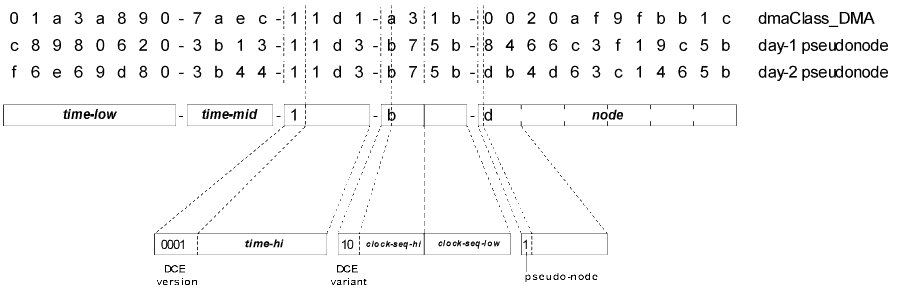

$$Author: Orcmid $
$$Date: 13-08-22 12:15 $
$$Revision: 18 $The CSDocs proposal includes creation of a new general property that can be used on any persistent element, the InstanceId. This is a structural solution, accomplished entirely within the model, for identifying elements of independently-persistent objects when it is valuable to do so, as in CSDocs compounding relationships.
This position statement is part of the CSDocs Architecture Sketch. It elaborates on proposed rules for InstanceId values and how the property is introduced. This is the basis for further e-mail discussion and arrival at a consensus position in the CSDocs Foundation proposal.
The statement is in two parts:
Having InstanceId be an Optionally-Supported Property of dmaClass_DMA Class
That is discussed in the companion page that provides the overall position statement on InstanceIds.
Having InstanceId values be DmaId values.
That is discussed on this page, along with background on using DmaId values in legacy situations.
This is InstanceId Position Statement 0.2 created on 2006-08-28 18:06 -0700 (pdt)
Content
DCE UUID Version 1 Format
- UUID Time Stamp: time-low, time-mid, time-hi
- Clock-Seq Values
- Node Identification
Pseudo-Node Identifications
When InstanceId is Relevant
Alternatives to the CSDocs InstanceId in Identifying Specific CSRelationship Elements
Mapping Locally-Unique Ids to DmaIds
Normative Specifications
Informative References
- The InstanceId property has values of type DmaId.
- It InstanceId is supported on a class of DMA object, it is required to be read-only and system-derived. The presence of a value is optional.
- An InstanceId property has a value if and only if the DMA object supporting the property corresponds to a persistent element of a DMA System
- Any time that an object-valued property that corresponds to a dependently-persistent element is given a new value (via a Put..., Insert, or Replace method), and that value is made persistent, any InstanceId property for that new persistent element will have a never-used DmaId value.
In this position paper, use of a DmaId and achievement of global uniqueness and complete unambiguity is proposed to avoid having to worry about degrees of uniqueness, especially in query, cross-repository operations, etc.
DmaId values are DCE Universally Unique IDentifiers (UUIDs) [DCE RPC]. DmaIds are 128-bit binary values. DmaIds that are generated correctly on computers with network cards are guaranteed to be different from all other DmaIds until at least 3400 AD.
DmaId values can be generated without consultation with a centralized authority. The uniqueness of IEEE 802 network identifications is sufficient to allow each network node to independently produce DmaId values that will be unique and unambiguous. These DmaId values can be conveyed anywhere and never be confused with any other DCE UUID.
The technique for generating DCE UUIDs already provides for clock corrections. The UUID generator will recover after system failures and crashes where state and possible history are lost. There is no need to invent another technique to prevent accidental duplications of locally-unique labels or identifiers. UUIDs are already available, can be generated very quickly, are both safe and unique, and can be used for a very long time (at least another millenium).
The DmaId is also compatible with, and fully interoperable with, the Microsoft GUID as it is widely used and supported on the Microsoft Windows platform and in the Component Object Model [COM Spec].
DCE UUIDs are easily compared and different UUIDs are usually recognized as different with very little effort. There need be no accomodation of differing sizes and comparisons based on anything but binary values. There are also standard 16-bit hash-value functions that work well with UUIDs to provide rapid lookup in to sets of UUIDs.
Generally, a fixed 128-bit binary value is simple to use routinely as an InstanceId for any number of purposes. Indexing is simplified by having the same kind of easily compared, easily-stored value be used everywhere that an InstanceId is useful.
Use of text strings, small integers, and other varieties of values is useful on a local, application or implementation-specific basis. However, there is no reliable interoperable case that will work for different document spaces that use special-case solutions for their different local situations. The use of DmaId for InstanceId provides for predictable methodology across a wide variety of document collections.
Another difficulty with local solutions is that over time, as more functionality is introduced and more use of InstanceId is required, one is led slowly but surely to create more features of DmaId without having DmaId compatibility.
Finally, it is difficult to specify an optional, interoperable facility that relies on local options for achieving degrees of uniqueness. The concern is not only about added complexity of the specification: there is also concern that the solution will not scale to meet the requirements of advanced features, forcing replacement of the InstanceId implementation or leading to introduction of further special cases.
It is proposed to accept the use of a general InstanceId solution, even for the specific case of the CSDocs Foundation, so that there is no doubt about the ability to extend to use of InstanceId to additional usages and requirements beyond the foundation.
The DCE UUID used for DmaId is exactly that specified for [DCE RPC] and used by Microsoft for COM [COM Spec]. This is the same as the GUID format generated by Microsoft utilities and development tools [VS60]. This tutorial description is provided to provide more familiarity with UUIDs and the options for applying them in legacy situations.
There is a standard format for presentation of DCE UUID values as sequences of hexadecimal digits separated by "-" characters. Typical sequences and their interpretations as structures of unsigned binary integers is illustrated in the Figure.

Figure. DCE UUID Structure (click for Visio image)
At the top of the figure, UUIDs are shown in their standard text representation. This sequence of 36 characters is the standard form used for DCE UUIDs everywhere. The '-' characters are a required part of the format. The other 32 characters specify hexadecimal numbers, using '0' .. '9' and 'a' .. 'f' (or 'A' .. 'F') to represent 4-bit binary fields (decimal 0 to 15 and binary 0000 to 1111).
All of the illustrated UUIDs are in DCE version 1 format. This format is distinguished by the following characteristics:
The first character of the fourth group is one of the hexadecimal digits 8 to b (decimal 8 to 11, binary 1000 to 1011).
This leading binary '10' pattern establishes the UUID as a DCE variant.
The first character of the third group (version and time-hi) is always '1'.
This leading binary '0001' pattern establishes this DCE variant as being for a standard DCE version UUID.
The parts between the '-' characters separate different components of the UUID. The components represent the following information:
60 bit time stamp representing 100-nanosecond intervals since 1582-10-15-00:00:00.00 UTC
14 bit clock-sequence value used to prevent inadvertent duplications as the result of clock irregularities and loss of system state
6-octet sequence consisting of an IEEE 803.2 node identification
The time stamp values correspond to the number of 100-nanosecond intervals that have occurred since the initiation of the current Gregorian calendar on October 15, 1582 A.D of that calendar.
The 60 bits are expressed in three parts: time-low (32 bits), time-mid (16 bits), and time-hi (12 bits).
The integer value of the time stamp is
(time-hi נ216 + time-mid) נ232 + time-low
It is not expected that time stamps be accurate to the nearest 100 nanoseconds. It is expected that time stamps generated with the same node and clock-seq values be monotonically increasing. There must be sufficient accuracy of time-keeping that duplication of identical time stamp and clock-seq combinations is statistically impossible for a given node identification.
The first group, consisting of 8 hexadecimal digits, specifies the value of a 32-bit unsigned binary integer, time-low. As a 100-nanosecond interval counter, time-low takes 429.4967296 seconds (about 7.16 minutes) before it repeats.
The second group, consisting of 4 hexadecimal digits, specifies the value of a 16-bit unsigned binary integer, time-mid. The time-mid value advances each time time-low changes to 0. So time-mid changes every 429.4967296 seconds. It will take about
28,147,497.67 seconds, or about
7,818.75 hours, or about
325.78 days
for time-mid to repeat.
The third group, consisting of 4 hexadecimal digits, specifies the value of a 16-bit unsigned binary integer. The high-order nibble of 4 bits is used for a version field and the remaining 12 bits constitute the time-hi value. Since time-hi changes every 325.78 days, it will take
1,334,399.89 days, or over
3,653 years (4096 clicks of time-hi)
for time-hi, and hence a value of the entire time stamp, to repeat.
The fourth field of the UUID string, consisting of 4 hexadecimal digits, specifies the value of a 16-bit unsigned binary integer. For a DCE UUID, the high-order 2 bits are used for a constant variant-identification field and the remaining 14 bits constitute the clock-seq value.
The clock-seq value is required to start as a random number generated in such a way that there is a negligible chance that the same clock-seq value would be employed with the same time stamp if the node identification were moved to (or from) another computer.
[DCE RPC] specifies the conditions for generating clock-seq values and altering them any time there is risk of duplicate time stamps being produced without detection. This can occur, for example, when the local system clock is adjusted or the system is restarted in a way where it is not certain that the last-generated UUID has been remembered. The [UUIDs-GUIDs] working paper provides a sample implementation that illustrates how these qualities can be achieved.
In the figure, the fourth field is also shown separated into two 8-bit binary fields, one containing the variant and clock-seq-hi, the other containing clock-seq-low. In that storage arrangement, which is used in the interchange of UUIDs in binary data structures (including DmaIds), it is the case that
clock-seq = clock-seq-hi ײ56 + clock-seq-low
or, put slightly differently,
clock-seq-low = clock-seq mod 256;
clock-seq-hi = (clock-seq - clock-seq-low) 獊 256
The final part of the UUID sequence consists of a 6-octet node identification sequence. Each pair of hexadecimal digits specifies the value of a single 8-bit binary value (octet), and the six octets are presented in the same order used in the interchange of IEEE 802.3 network node identifications.
In the pure use of DCE GUIDs, a node identification will always have the first octet hold a value less than 128: the high-order bit of the value is always 0.
In the figure, the first example is the UUID used to identify the well-known DMA 1.0 dmaClass_DMA class. It conforms exactly in structure to an official DCE UUID. The value was generated using a node on a system that, on its own, will never generate that particular UUID again.
When there is no node identification available, or it is undesirable to use the true node identification, different procedures are required to produce UUIDs that cannot conflict with UUIDs generated on systems having legitimate IEEE 802.3 network node identifications.
Some approaches extend the basic DCE UUID format by using the high-order bit of the first node octet to indicate when a pseudo-node identification is present..
In the figure, the second and third sample UUIDs are produced using such a technique. The UUIDGEN utility of [VS60] was used on a Windows 98 system with no network card. The "Day-1 pseudonode" example was used on the first day. After shutting down the computer and restarting on the next day, the "Day-2 pseudonode" example was obtained.
There is no standard for the creation of pseudo-node identifications, so interoperability among computers systems is not assured.
A working paper by Paul Leach and Rich Salz [UUIDs-GUIDs] describes ways to extend the [DCE RPC] UUID specification to allow pseudo-node identification in DCE Version 1 UUIDs. Additional versions are also proposed. None of these have been adopted as standard extensions to the DCE UUID.
UUIDs that are intended to be communicated to other computer systems should not be generated using anything but the "pure" DCE UUID format.
- When InstanceId is Relevant
- Alternatives to the CSDocs InstancdId in Identifying Specific CSRelationship Elements
- Mapping Locally-Unique Ids to DmaIds
- Simple Mapping Technique
Given a legacy repository that does not support InstanceId already, it is suggested that the requirement to support DmaId for InstanceId is a barrier to adoption of CSDocs.
Sticking with the CSDocs foundation, ignoring other potential applications of InstanceId, it would appear that having InstanceId be a DmaId cannot become a barrier until the following situations has obtained:
- The legacy system has found a way of expressing the DMA Relationship model and realizing CSRelationship objects to at least bridge CSRoot and CSComponent DocVersions.
- The legacy system is prepared to support identification of specific elements within a CSRoot and/or CSComponent as part of the CSRelationship implementation.
- The legacy system could operate with a simpler or already-available facility if globally-unique identifiability of elements were not required.
- The Ids the legacy system employs, or can employ, are ones that the legacy system can ensure are not duplicated, even in the face of failures and loss of system state.
The CSDocs Foundation provisions for InstanceId are for interoperability in the identification of specific elements (2, above).
It is legitimate for a DMA DocSpace to support subclasses of CSRelationship that do not support the additional properties of CSRelationship for identifying specific elements. That is, none of the dmaProp_HeadRenditionId, dmaProp_HeadContentElementId, dmaProp_TailRenditionId, and dmaProp_TailContentElementId properties would be supported on the SCRelationship subclass.
There is no impact on CSDocs-unaware requesters. There is some impact on CSDocs-aware requesters, in that there will be CSRelationship objects for which the principal, if any, for locating specific elements is not known. This is not a new condition to deal with. No CSDocs implementation is required to use a known method for identifying specific elements.
When a CSDocs implementation does employ the CSDocs provisions for identification of specific elements on a CSRelationship object, there is more available to a CSDocs-aware requester, including the prospect of being able to create or alter a CSRelationship in an interoperable way.
Assuming that conditions (1-4), above, are satisfied by a legacy system, it is possible to map the local identifer to a globally-unique DmaId. This assumes that there is an unambiguous mapping between the locally-unique identification and a 32-bit binary value.
To ensure that the legacy system will never exhaust the capacity of a single 32-bit value, it may be necessary to partition the set of local identifications and map each set to a different locally-unique 32-bit binary value. How this partitioning is accomplished depends on the characteristics of the legacy system. The only requirement to have a DmaId mapping is that there be a means for associating a single DmaId (a BaseId) with each partition, and then mapping the locally-unique identifiers ever used in that partition to unique 32-bit values.
For CSDocs, the legacy implementation need only add a DMA implementation for producing the correct DmaId value of an InstanceId property. It should be able to recognized the correct partition and produce the same 32-bit binary value without error. There is no requirement, within the CSDocs Foundation, to be able to directly access some element, given the value of its InstanceId. It is only necessary to deliver the value of the InstanceId once the element is accessed.
Here is a trivial way to obtain a set of DmaId values that can be mapped to and from 32-bit unsigned integers:
- Have access to the pure DCE UUID generator of a system that can be shut down easily and that has a reliable clock (currently accurate to within one minute).
- Generate a UUID value, StartId with the system. Record the value.
- Shut down the system.
- Wait at least 15 minutes.
- Start up the system again and generate a new UUID value, StopId with the system.
- Make the following changes to StopId:
if StopId.time-mid = 0 then StopId.time-hi := StopId.time-hi - 1;
StopId.time-mid := (StopId.time-mid + (216 -1)) mod 216;
StopId.time-low := 0;
- The objective is to produce a value of StopId that is the first of a sequence of 232 UUID values that were never generated by the system and will never be generated by the system (the appropriate time having safely passed, never to be used again with this value of clock-seq).
- It is ideal if the StopId.clock-seq differs from StartId.clock-seq. This protects against a duplication of any UUIDs that were generated by the computer system after StartId was generated and saved. If clock-seq has not changed, it is important that
(StopId.time-hi נ216 + StopId.time-mid) > (StartId.time-hi נ216 + StartId.time-mid),
ideally by a generous margin.
- The key idea is to have the block of time stamps be separated by generous intervals from the ending and restart times of the system and to be confident that the clock will never be reset to fall into the same range with the same clock-seq values.
Once the UUID of an unused block is found in this form, the mapping between the UUID and some locally-unique identifier is usually straightforward:
- Define the modified StopId value to be the BaseId associated with some partition of the legacy collection. It is important that the partition of the collection be one for which the 232 reserved timestamp values will never be consumed.
- When it is necessary to deliver an InstanceId value for an object of the partition, convert the object's locally-unique identification to a 32-bit integer by appropriate lossless conversion technique.
- Given the 32-bit integer version of a locally-unique identifier, deliver it through the DMA API as an InstanceId value by returning the partition's BaseId with BaseId.time-lo set to the 32-bit integer.
- Given a DmaId to resolve against an InstanceId (internally), verify that all of the fields but BaseId.time-lo match the corresponding fields of BaseId. Then BaseId.time-lo is the internal 32-bit integer to use. It should do no harm if the BaseId.time-lo value is not one that is currently supported as a local identifier in the legacy subspace.
- Do not depend on the secrecy of a DmaId of this kind (or any other kind, for that matter) to accomplish a security safeguard on its own.
References on UUIDs, how they can be generated, and provisions for generating/reserving blocks of UUIDs that can be used to fabricate UUIDs from locally-unique IDs that are easily mapped to dense integers.
Definitive sources on the format, generation, and usage of UUIDs and GUIDs.
- [ISO 11578]
- ISO (International Organization for Standardization) ISO/IEC 11578:1996. Information Technology - Open System Interconnection - Remote Procedure Call (RPC). 570pp. JTC 1. ICS 35.100.70. This ISO standard covers the complete RPC system. It is an outgrowth of the OSF DCE specification and covers UUIDs and GUIDs. The document is only available in hard copy through a national standards body, such as the American National Standards Institute (ANSI). Printed copies of this specification cost over $250 in the United States.
- [DCE RPC]
- DCE 1.1: Remote Procedure Call. Open Group Technical Standard. Document Number C706. The Open Group (Reading, UK: August, 1997). 737pp. Electronic edition, $58.00. HTML edition on-line. UUIDs are specified in an Appendix of the on-line edition. Registration is required to access the on-line material. C706 was formerly C309 [CAE RPC].
- [CAE RPC]
- CAE Specification, X/Open DCE: Remote Procedure Call. X/Open Company Limited (Reading, Berkshire, UK: 1994). X/Open Document Number C309. ISBN 1-85912-041-5. pp. 585-592 describe UUIDs. According to [COM Spec], COM GUIDs are identifiers that are interoperable with the UUIDs of p.586, and not related to the GUIDs mentioned as a specific scheme on p.587 of [CAE RPC].
- [COM Spec]
- Microsoft Corporation and Digital Equipment Corporation. The Component Object Model Specification. Microsoft Corporation (Redmond, WA: 1992-1995). Version 0.9, October 24, 1995. This specification is available on the Microsoft Developer Network (MSDN) Library CD-ROM distribution, as late as April, 1999. The specification can also be found at Microsoft's on-line pages. There is an on-line (HTML) version and two downloadable versions as Microsoft Word 6.0 Master Documents with individual chapters. A Word 6.0 version is required in order to have the footnotes and bibliography. Chapter 3.2 Globally-Unique Identifiers, provides the description of GUID usage in COM. [CAE RPC] is the referenced source.
- [Inside OLE]
- Brockschmidt, Kraig. Inside OLE. ed.2. Microsoft Press (Redmond, WA: 1995). ISBN 1-55615-843-2. pbk with two disks. Chapter 2, Objects and Interfaces, Object Identity section, has a treatment of Globally Unique Identifiers. This book is available on the Microsoft Developer Network (MSDN) Library CD-ROMs, as late as April, 1999. The Globally Unique Identifiers section of the book can also be found on MSDN Online at http://msdn.microsoft.com/LIBRARY/BOOKS/TECHNLANG/INOLE/D1/S10E8.HTM. It is necessary to register, although access to MSDN Online is free. Brockschmidt discusses creation of blocks of GUIDs
- [OSF DCE]
- Miller, Steven. DEC/HP Network Computing Architecture Remote Procedure Call Run Time Extensions version OSF TX1.0.11. Open Software Foundation (Cambridge, MA: July 23, 1992). This is the reference that is commonly given for the definition of UUID and GUID, a particular adaptation of it. The current specification from The Open Group is [DCE RPC].
- [UUIDs-GUIDs]
- Leach, Paul J., Salz, Rich. UUIDs and GUIDs. Internet Draft <draft-leach-uuids-guids-01.txt>. Microsoft, Certco. February 4, 1998. Expired August 4, 1998. This is an expired draft document. It has no standing as an IETF specification and may not be employed as such. To determine if this draft has been updated or replaced, consult the IETF Internet-Draft Directory. This draft is also referenced by The Open Group at http://www.opengroup.org/dce/info. This draft provides implementations of common UUID creation, comparison, and conversion functions. The DCE version 1 UUID is the same form used for Microsoft COM GUIDs in [COM Spec]. Leach and Salz introduce a method for producing DCE version 1 UUIDs using a cryptographic-quality random number for the Node identification when there is no IEEE 802 node identification available or it is undesirable to use it.
- [VS60]
- Microsoft Corporation. Visual Studio 6.0. The Microsoft Win32 development for Intel platforms provides two utilities, UUIDGEN and GUIDGEN. UUIDGEN is a console application that uses the operating system to derive UUIDs. GUIDGEN is a VS60 tool that uses the same UUID generator to offer GUIDs in a variety of formats used in programming and creating installation scripts. When UUIDGEN produces a pseudo-node form of UUID on a machine with no detected network node, there is a warning that the resulting UUID is not reliable beyond the single machine and should not be interchanged with other systems. GUIDGEN makes no such announcement.
updated 2006-08-28 18:06 -0700 (pdt) by Dennis E. Hamilton created 1999-07-11-22:06 -0700 (pdt) by Dennis E. Hamilton